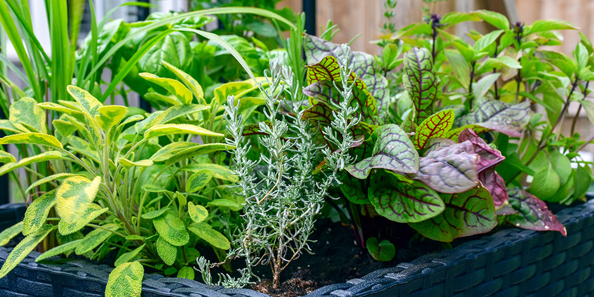

Vertical Gardening
Vertical gardening is a method of growing plants upward instead of spreading them across the ground. Plants are grown on walls, shelves, hanging pots, trellises, or stacked containers. It is especially useful for homes with limited space.

Indoor Gardening
Indoor gardening is the practice of growing plants inside homes, apartments, schools, or offices. It is a popular gardening method for people who have limited outdoor space or want to bring nature into their indoor environment. Plants are usually grown in pots, containers, hanging baskets, or small indoor systems placed near windows, balconies, or under artificial lights.

Smart Gardening
Smart gardening uses technology such as automatic watering systems, sensors, and mobile apps to monitor plant health and soil conditions. It helps reduce manual work and improves plant growth efficiency. It helps people take care of plants more easily and efficiently by reducing manual work and improving plant health.